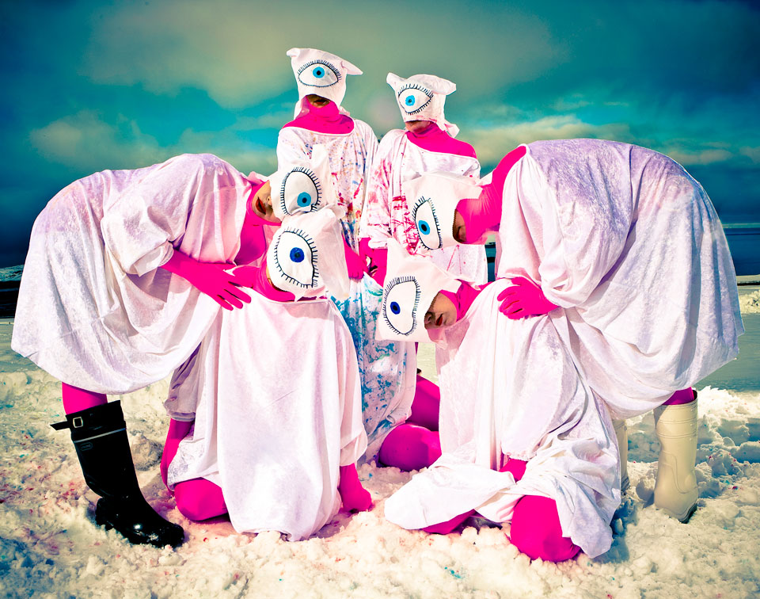
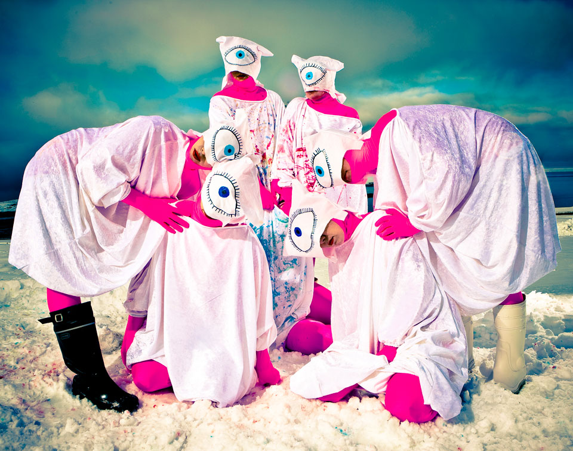

Episode 7: No Seeing Eye
The No Seeing Eye documentary film follows the entire production of Episode 7 of The Weird Girls Project. Filmed and produced by Hrafn Jónsson and Oddur Ástraðsson, edited and post produced by Michael Todd. They followed the episode from its conception in December right up to the event itself.
The group were invited to produce this episode at The Northern Wave Film Festival in Grundarfjörður. Kitty worked with photographer Kristinn Magnússon to produce the concept outside with the stunning surroundings of the area. The giant swathes of fabric represented a fresh canvas with which the women themselves became artwork.
Kitty took inspiration for the giant eye from her new and not yet announced pregnancy, feeling that her unborn child was entirely reliant on it's mother's vision and behavior during its time unable to see out from inside her.
- Producer, Concept and Artistic Direction: Kitty Von-Sometime
- Official Photographer: Kristinn Magnússon
- Behind the Scenes Photographer: Sara Johanna
- Costumes: White dresses by Fiona Cribben and Magga Sigga. Pink suits by Zhang Jie. Masks by Sunna Ben.
- Head Runner: Fríða Einarsdóttir
- Assistant Runner: Eva Björg
- Documentary makers: Oddur Ástraðsson, Hrafn Jónsson and Michael Todd
- Music: Paul Zyla
- 28th February 2009
 
